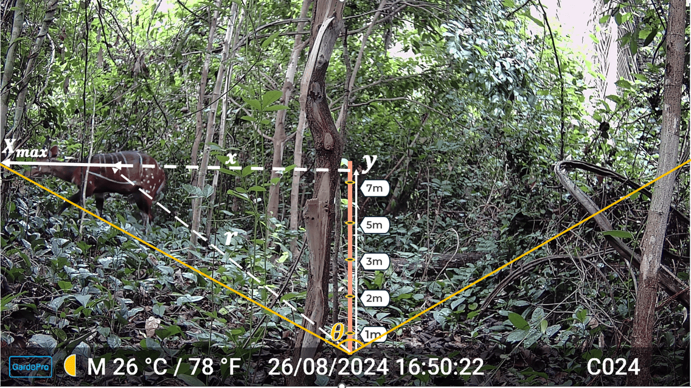

How to estimate distance between camera trap and animals?
Source:vignettes/articles/distance_measurement.Rmd
distance_measurement.RmdMeasuring Camera-Animal Distances
Accurate distance measurement forms the foundation of reliable distance sampling estimates. For camera traps, this measurement presents unique challenges. Unlike human observers who can estimate distances directly in the field, we must determine distances from photographic or video images after data collection.
When an animal triggers a camera, two key measurements are needed: the radial distance from camera to animal, and the angle of detection relative to the camera’s central axis. These measurements must be recorded at regular time intervals (the parameter t discussed earlier) for as long as animals remain within the viewshed. If an animal walks past the camera, for instance, multiple distance measurements at 0.5-second intervals might yield 20 or more data points from a single detection event.
For example, suppose a camera records a 10-second video of an animal. If we take a distance measurement every t = 0.25 seconds, this would yield 40 observations (10/0.25) of the animal’s position and distance from the camera during that single event. If the camera is configured to capture still images instead of video, each individual photo can similarly be treated as an observation from which the animal’s distance is measured.
Manual Method 1
Several approaches exist for determining camera-animal distances in practice. The choice among them depends on available resources, desired precision, and logistical constraints.
The reference object method involves placing markers at known distances from the camera before deployment. These might be stakes, painted rocks, or other permanent features visible in every image. When an animal appears, its distance can be estimated by comparing its position to these reference markers. A variation of this approach photographs field crew members at predetermined distances, creating a library of reference images for later comparison with wildlife detections.
Let us consider an example from an image collected in the Lama Classified Forest in southern Benin by Gilles Adounke. The camera used was a GardePro model with a field of view (FOV) of 120°, which corresponds to 2.094 radians after conversion (120*3.14/180).

Our objective is to estimate the distance \(r\) from the camera to a bushbuck (Tragelaphus scriptus) visible in the image. The stakes placed in the scene form a vertical reference line that divides the camera’s field of view into two halves. According to the Pythagorean theorem, the distance can be expressed as: \(r^2 = x^2 + y^2\) where \(y\) vertical (forward) distance along the centre line, and \(x\) horizontal distance from the centre line to the animal.
From the position of the stakes in the image, we estimate \(y \approx 7.5 \text{m}\) (between the 5 m and 10 m markers).
Step 1. Calculate the maximum horizontal distance \((X_{\text{max}})\) at (y = 7.5)
The half-angle of the camera’s field of view is \(\alpha = \theta/2 = 2.094/2 = 1.047\). Thus, the maximum horizontal extent is: \(X_{\text{max}} = y \cdot \tan(\alpha) = 7.5 \cdot \tan(1.047) \approx 13 \text{m}.\)
This represents the real-world half-width of the camera’s view at that distance.
Step 2. Relating image measurements to real-world distances
Using a ruler in PowerPoint, we measure the horizontal half-width of
the camera’s field \((X_{\text{max,img}})\) directly on the
photo, and it is equals 7in. The animal’s horizontal
offset from the central vertical line \((x_{\text{img}})\) measures
4.5in. By simple Cross-multiplication:
\(13 \,\text{m} \;\to\; 7
\,\text{in}\)
\(x \;\to\; 4.5 \,\text{in}\)
which gives: \[
x = \frac{13m \times 4.5in}{7in} \approx 8.357m
\]
Step 3. Apply the Pythagorean theorem
Finally:
\[ r^2 = x^2 + y^2 = (8.357)^2 + (7.5)^2 \approx 126.089m^2 \]
\[ r = \sqrt{126.089} \approx 11.229 \text{m} \]
The estimated distance from the camera to the bushbuck is
about 11.229 m.
ct_camtrap_animal_distance() function from ct
package can be used to calculate easily this distance.
library(ct)
ct_camtrap_animal_distance(fov = 120, # camera field of view
forward_distance = 7.5, # estimated from stakes
ref_halfwidth = 7, # got with PowerPoint
animal_offset = 4.5# got with PowerPoint
)
#> [1] 11.22446Manual Method 2
The field measurement approach reverses the process of first method. After reviewing images, we return to camera locations and physically measure out the distances to locations where animals were detected, using the images themselves as guides to reconstruct positions. While time-consuming, this method can achieve high accuracy.
Automatic pipeline
Automated distance estimation for wildlife camera trapping (Johanns, Haucke, and Steinhage 2022) is a good ressource. The relevant repository provides the source code. It introduces a fully automatic pipeline eliminating the need for manual annotation, additional sensors, or pre-recorded reference material. The system detects animals, estimates their distance from the camera, and tracks their movement in 3D space, outputting results as a CSV file for further analysis. A Google Colab notebook is provided for easy use, allowing users to test the pipeline or with custom inputs by uploading images or videos (split into frames) and specifying the camera’s field of view.
The pipeline require a basic programming experience in Python and has some limitations: it is not species-specific, meaning animals are detected generically rather than identified to species level. Additionally, detection accuracy depends on video quality, with factors such as lighting, background complexity, and occlusion potentially affecting results.